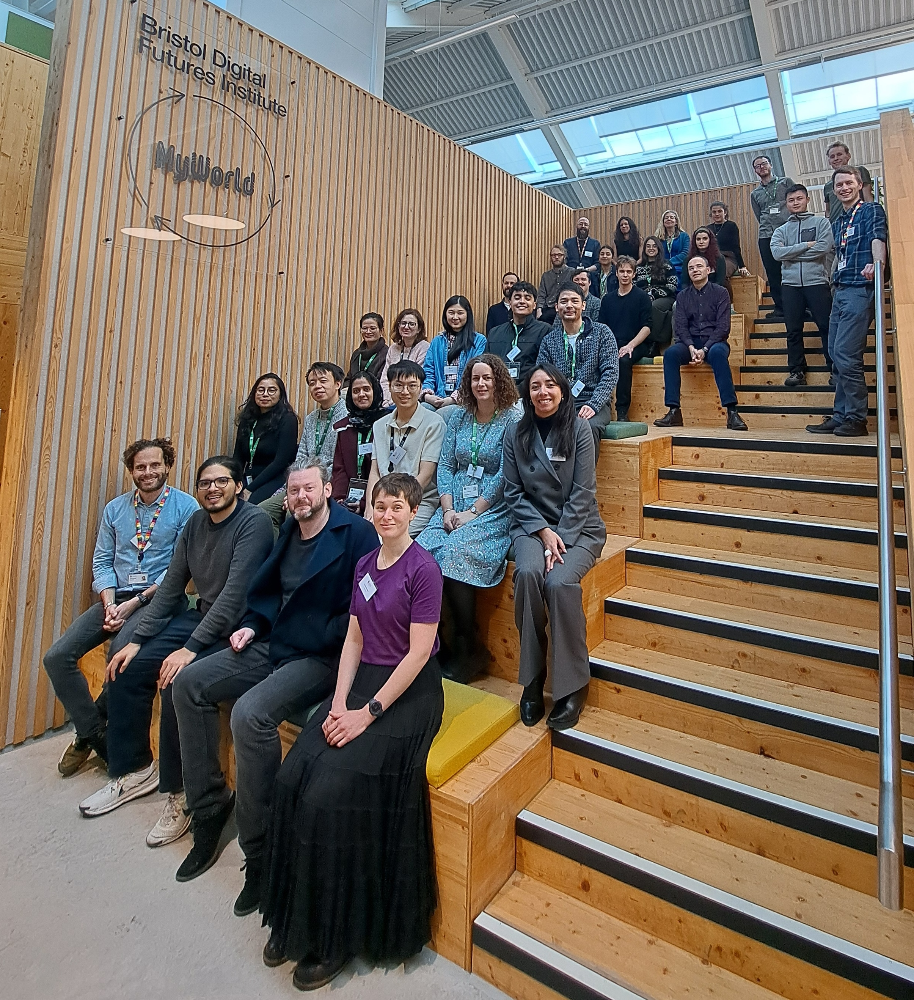

Image credit: Academic
Image credit: Academic
Web Archives for Social Sciences Datathon
Web Archives for Social Sciences Datathon
There is something magical when you have 25 people in the same room working on similar problems. It becomes even more exciting when these people are super-talented social data scientists, who are passionate about using web data at scale to answer policy-relevant research questions.
The task at hand was anything but straightforward. I do recall that when I started exploring web archives as a potentially intersting source of digital data quite a few years ago, not only were the tools limited, but the broader understanding of their utility was practically nonexistent.
Simply put, archived web data offer rich information about both context and content through the text they contain. They can be geolocated using place references and are always time-stamped.
Fast-forward a few years — and quite a few papers and projects later — 25 colleagues from as far as Belgium and Chile answered our call for a Web Archives for Social Sciences Datathon. They came from different disciplines and at different career stages: from an undergraduate student (well done, Camilo!) to early-career and more senior colleagues — some of whom were doing big data before big data was a thing — and from geographers to economists and sociologists.
The Datathon was organised as part of our SDR UK project ‘An Atlas of Economic Activities in the UK: tapping into web archives for social science research’. A key part of our vision has always been to build capacity within social sciences to utilise web data at scale.
And this is what we did. The Atlas team – Leo, Levi, Rui and I – put together 5 different problems more or less related to what we are doing for our project: build bottom-up typologies of economic activities in the UK using archived web data. We provided well-curated extracts from the Common Crawl, designed interesting and open ended challenges, prepared AI-ready computational infrastructure and off you went!
Within 36 hours, participants learnt how to deal with complex and noisy web data. They found clever ways to slice and dice such unstructured textual data and build meaningful and manageable subsets. They utilised a wide range of tools: from simple text analytics to more complicated predictive models, and from well-established computational methods to more experimental LLM-based tools. They experienced, first hand, the limitations of each choice and found ways to overcome them.
Don’t get me wrong though, the problems were only the excuse. The real benefit was the journey to Ithaca: the collective capacity we built as a team. While I wouldn’t be surprised if these 25 web data warriors could save the world in just 36 hours, the real impact will come later, when they apply these data and methods to their own research questions. And that is why we are so excited.
To deliver the Datathon, we partnered with our friends from the Common Crawl – who else is better equipped to talk about open data and workflows? – and the UK Web Archive, both longstanding research partners in this journey. Thank you Laurie, Thom, Nora, Helena and Jo! SDR UK has supported our work throughout – thank you very much. BDFI kindly provided excellent facilities — thanks, Leah. And the JGI and Turing Liaison team have been with us from the beginning — thank you, Jim and Connor. Last but not least, massive thanks and kudos to Leo for all his hard work in supporting and guiding the teams before and during the Datathon.
The above was first published on the Jean Golding Institute blog.
